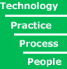

SPA Conference session: Towards a precise business language for model driven development | |||
| One-line description: | Gain experience and discuss the use of resticted english to generate plugable code fragments | ||
| Session materials | |||
| Session format: | Tutorial [read about the different session types] | ||
| Abstract: | As Unified Modelling Language (UML) becomes an important standard, users are realising that the syntactic description of data-centric domains using UML class diagrams provides an incomplete solution. Additional constraints are required in order to represent all but the most simple business domains. The Object Constraint Language (OCL) is provided as a part of the UML standard for the purpose of describing constraints over UML models. It has a technical syntax based partly upon the Smalltalk programming language underpinned by set theory and predicate logic. It has been argued that formal languages such as OCL are not suitable for domain experts who possess business knowledge but lack technical skills. Whether this is true or not, it remains a fact that OCL is rarely used to complete UML class diagrams in software projects. When text is used to augment class diagrams it is rarely complete, consistent and correct, thus leading to poorly specified UML models which in turn contribute to ambiguous requirements specifications, causing projects to over-run and / or produce poor quality software. Furthermore, a precise language that can be computer processed is a prerequisite for model driven development and clearly it would seem desirable to be able to complete the specification in a language that a non-technical user can understand. This session presents a controlled natural language syntax as an alternative concrete syntax of OCL. The controlled language is a subset of English, which is designed for use with UML class models. This means that whilst business rules usually read just like plain English, the restricted grammar prescribes a fixed structure that must be followed. The complete English language is powerful, but it is ambiguous and much richer than is necessary for the task of specifying constraints over business data. The advantage of a restricted grammar is that it can be interpreted by software, thereby enabling automated generation of code directly from rules written by business analysts. Using a natural language-based approach helps keep business rules readable and visible to stakeholders, rather than hiding their business constraints as hard-coded rules in application programs. It also eliminates the error-prone manual translations normally required to proceed from business analysis to system implementation. Objectives: - Introduce audience to the syntax of NRL and explain how it can be used to complete UML calss diagrams. - Allow the audience to write some rules against a sample model. - Extend our understanding of what it means to provide a precise specification and posibly generate code or some other representation. - Demonstrate code generation using the NRL. | ||
| Audience background: | In order to gain most benefit from this session the participant will: - Have some practical experience of using UML diagrams as part of the specifiaction / design process. - Have an interest in making model driven development a reality. - Have experience which they can share to either support the notion or declare that we are all misguided fools ! | ||
| Benefits of participating: | - Understand the use of restricted languages to provide unambiguous software specifiactions in a non-technical, but parsable form. - Understand how such a language can be used to provide automatic generation of test code and plugable code fragements that can be used within a runtime framework. | ||
| Materials provided: | - NRL rules manual - Questions for group working - Formal feedback questionaire. | ||
| Process: | How it will work: - Mixture of tutorial, audience participation using pre-written questions and reflection (what does it mean to be precise ? What does precision gain us in the development process ?). Timetable: - 0 - 10 - Introduction and background - 10 - 50 - Short NRL tutorial - 50 - 70 - First exercises - 70 - 85 - Audience questions and feedback - 85 - 100 - Break - 100 - 120 - Second exercises - 120 - 140 - Refection - open discussion around the use of such a language - 140 - 150 - Fill in questionaire. | ||
| Outputs: | Web page containing a summary of the user feedback questionnaires and group discussion. | ||
| History: | This session is based directly upon an MSc project thesis and practical work carried out at HSBC. The history of NRL can be traced to Christian's doctoral thesis on cross validation of multiple xml documents. NRL is currently being used to generate test suites for xml message formats at HSBC. | ||
| Presenters | ||
| 1. Robert James HSBC Robert James has been involved with object technology since 1991 when he first used Smalltalk/V. This experience has included involvement in most aspects of the software development process but the primary focus has always been on modelling and design. His current role within HSBC involves the creation and management of precisely specified models as the basis for large-scale systems integration. The process makes use of transformation technologies, enabling business experts to contribute directly to information models which are used to generate xml schemas, java ‘business rule’ components and a testing framework He is a regular speaker at SPA (formally OT) conferences and other events. | ||
| 2. Christian Nentwich Systemwire Christian Nentwich has been developing software since the age of eight and has extensive experience around data architectures and XML, since its early conception. He is currently Technical Director of Systemwire Ltd., a company founded at University College London where he leads technical development as well as providing advisory services around standards integration and data architecture to financial services firms. Christian holds a B.Sc. and Ph.D. in Computer Science from University College London (UCL) and is a regular speaker at academic, industrial and specialist financial services conferences. | ||
| 3. | ||